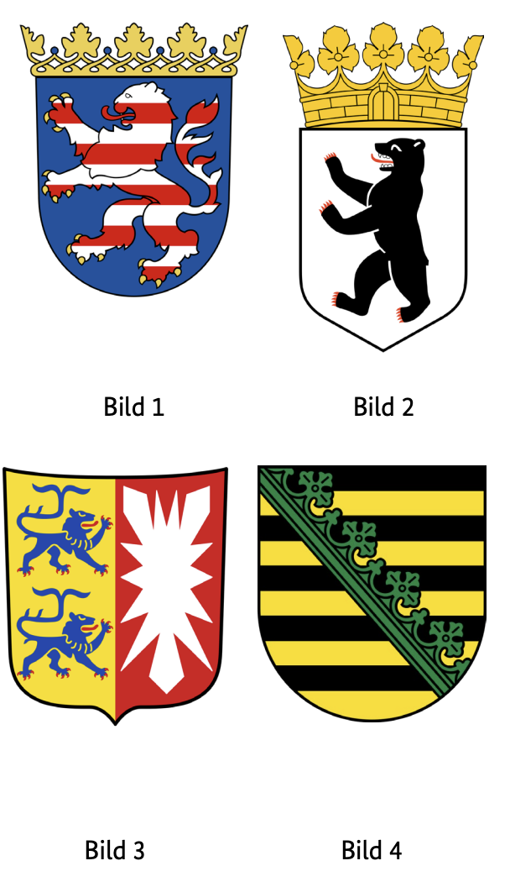
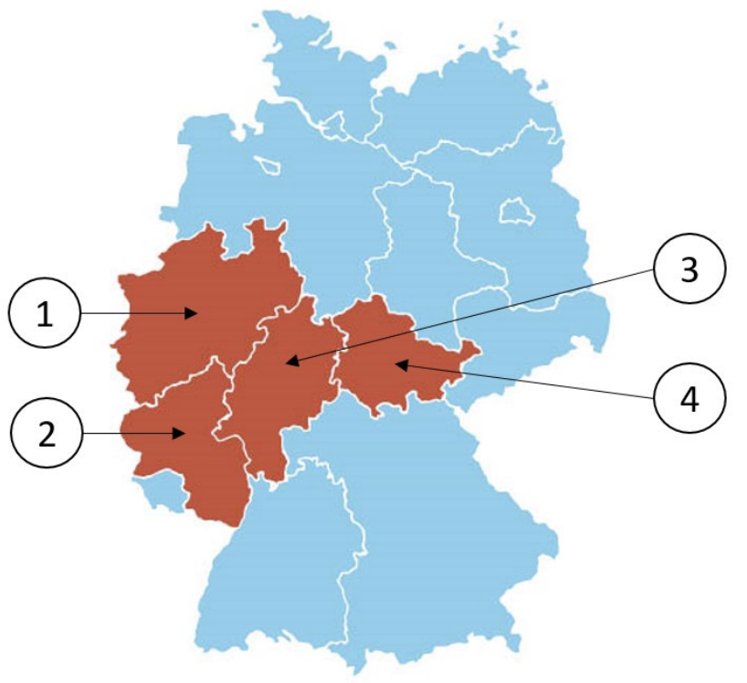

Resmi BAMF soru havuzundaki 10 Hessen (HE) eyalet sorusunun Almanca ve Türkçe açıklamalı interaktif çözümleri. Soru üzerine tıklayarak bilginizi anında test edin.
Almanya vatandaşlık ve kalıcı oturum için yapılan Leben in Deutschland (LiD) sınavında adaya toplam 33 çoktan seçmeli soru sorulur:
30 Genel Soru: Demokrasi, hukuk, tarih ve toplumsal yaşam (300 genel soru havuzundan).
3 Eyalet Sorusu: İkamet ettiğiniz eyalete özel tarih, coğrafya ve anayasa soruları (Aşağıdaki 10 eyalet sorusu havuzundan).
Sınavı geçmek için 33 sorudan en az 15 doğru (Vatandaşlık şartı) veya 17 doğru (Oryantasyon kursu başarı sertifikası) yapmanız gerekmektedir.
📝 10 Resmi Hessen Sorusunu Çözün
Soru #361 (1 / 10)Federal Eyalet: Hessen
Welches Wappen gehört zum Bundesland Hessen?
TR: Hangi arma Hessen eyaletine aittir?

✅ Doğru Cevap: Şık A (Bild 1)
Alman vatandaşlığı üzerine bir bilgi veya bilgi bilgi bir bilgi için bir sınavın veya öğrenme görevinin parçası olarak, federal eyaletler hakkında bilgi test edilecektir. Almanya'daki her eyaletin kendine özgü sembol ve renklere sahip bir arması vardır. Katılımcılar, birkaç arma görselleri görür ve hangisinin Hessen eyaletine ait olduğunu fark etmek zorundadırlar. Seçim, numaralı seçeneklerle yapılır ve bunlardan sadece biri doğrudur.
Im Rahmen eines Quiz oder einer Lernaufgabe zur deutschen Staatskunde sollen Kenntnisse über die Bundesländer überprüft werden. Jedes Bundesland in Deutschland besitzt ein eigenes Wappen mit spezifischen Symbolen und Farben. Die Teilnehmenden sehen mehrere Abbildungen von Wappen und müssen erkennen, welches davon dem Bundesland Hessen zugeordnet ist. Die Auswahl erfolgt über nummerierte Optionen, von denen nur eine korrekt ist.
As part of a quiz or a learning task on German civics, knowledge of the federal states is to be tested. Each state in Germany has its own coat of arms with specific symbols and colors. The participants see several images of coats of arms and have to recognize which of them is assigned to the state of Hesse. The selection is made via numbered options, only one of which is correct.
كجزء من اختبار أو مهمة تعليمية حول التربية المدنية الألمانية، يجب اختبار معرفة الولايات الفيدرالية. لكل دولة في ألمانيا شعارها الخاص برموز وألوان محددة. يرى المشاركون عدة صور لشعارات النبالة ويجب عليهم التعرف على أي منها تم تعيينه لدولة هيس. يتم الاختيار عبر خيارات مرقمة، وواحدة منها فقط صحيحة.
У рамках тесту або навчального завдання з німецької громадянської освіти потрібно перевіряти знання федеральних земель. Кожна земля Німеччини має власний герб із певними символами та кольорами. Учасники бачать кілька зображень гербів і мають визначити, який із них належить до землі Гессен. Вибір здійснюється за допомогою пронумерованих опцій, і лише один із них є правильним.
Soru #362 (2 / 10)Federal Eyalet: Hessen
Welches ist ein Landkreis in Hessen?
TR: Hessen'de hangi bir ilçe?
✅ Doğru Cevap: Şık D (Main-Taunus-Kreis)
Soru, Almanya'nın idari yapısıyla ilgilidir. Almanya, federal eyaletlere ayrılmıştır; bu eyaletler ise kırsal bölgeler ve bağımsız şehirlerden oluşur. Hesse bu federal eyaletlerden biridir. Doğru cevabı bulmak için, bahsedilen bölgelerden hangisinin aslında Hessen'de olduğunu ve hangilerinin diğer federal eyaletlere ait olduğunu bilmeniz gerekir.
Die Frage bezieht sich auf die Verwaltungsstruktur Deutschlands. Deutschland ist in Bundesländer gegliedert, die wiederum aus Landkreisen und kreisfreien Städten bestehen. Hessen ist eines dieser Bundesländer. Um die richtige Antwort zu finden, muss man wissen, welcher der genannten Kreise tatsächlich in Hessen liegt und welche zu anderen Bundesländern gehören.
The question relates to the administrative structure of Germany. Germany is divided into federal states, which in turn consist of rural districts and independent cities. Hesse is one of these federal states. In order to find the right answer, you have to know which of the districts mentioned is actually in Hesse and which belong to other federal states.
السؤال يتعلق بالهيكل الإداري لألمانيا. تنقسم ألمانيا إلى ولايات اتحادية، والتي بدورها تتكون من مناطق ريفية ومدن مستقلة. هيسن هي واحدة من هذه الولايات الفيدرالية. لكي تجد الإجابة الصحيحة، عليك أن تعرف أي من الدوائر المذكورة تقع فعليا في هيسه وأيها تنتمي إلى ولايات اتحادية أخرى.
Питання стосується адміністративної структури Німеччини. Німеччина поділена на федеральні землі, які, у свою чергу, складаються з сільських районів і незалежних міст. Гессен — одна з таких федеральних земель. Щоб знайти правильну відповідь, потрібно знати, які з згаданих округів насправді належать до Гессена, а які — до інших федеральних земель.
Soru #363 (3 / 10)Federal Eyalet: Hessen
Für wie viele Jahre wird der Landtag in Hessen gewählt?
TR: Hessen eyalet parlamentosu kaç yıl boyunca seçilecek?
✅ Doğru Cevap: Şık C (5)
Landtag, Alman federal eyaletinin eyalet parlamentosudur ve vatandaşlar tarafından düzenli aralıklarla seçilir. Seçim dönemi, milletvekillerinin yeni bir seçim yapılmadan önce yetkilerini ne kadar sürede kullanacaklarını belirler. Bu yasama döneminin süresi farklı federal eyaletlerde değişiklik gösterebilir. Temel siyasi bilgiyi kontrol etmek için soru şu: Hessen eyalet parlamentosunun seçim süresi kaç yıldır.
Der Landtag ist das Landesparlament eines deutschen Bundeslandes und wird in regelmäßigen Abständen von den Bürgerinnen und Bürgern gewählt. Die Wahlperiode bestimmt, wie lange die Abgeordneten ihr Mandat ausüben, bevor eine neue Wahl stattfindet. In den verschiedenen Bundesländern kann sich die Dauer dieser Legislaturperiode unterscheiden. Um politisches Grundwissen zu überprüfen, wird gefragt, wie viele Jahre die Wahlperiode des Hessischen Landtags beträgt.
The Landtag is the state parliament of a German federal state and is elected at regular intervals by the citizens. The electoral period determines how long the members of parliament exercise their mandate before a new election is held. The duration of this legislative period may differ in the different federal states. In order to check basic political knowledge, the question is how many years the electoral period of the Hessian state parliament is.
البرلمان هو برلمان ولاية اتحادية ألمانية وينتخب على فترات منتظمة من قبل المواطنين. تحدد الفترة الانتخابية مدة ممارسة أعضاء البرلمان لولاية ولايتهم قبل إجراء انتخابات جديدة. قد تختلف مدة هذه الفترة التشريعية بين الولايات الفيدرالية المختلفة. للتحقق من المعرفة السياسية الأساسية، السؤال هو كم عدد سنوات فترة الانتخابات لبرلمان ولاية هيسن.
Ландтаг — це земельний парламент федеральної землі Німеччини, який обирається з регулярними інтервалами громадянами. Виборчий період визначає, скільки часу члени парламенту здійснюють свій мандат перед проведення нових виборів. Тривалість цього законодавчого періоду може відрізнятися в різних федеральних штатах. Щоб перевірити базові політичні знання, питання в тому, скільки років триває виборчий період парламенту землі Гессен.
Soru #364 (4 / 10)Federal Eyalet: Hessen
Ab welchem Alter darf man in Hessen bei Kommunalwahlen wählen?
TR: Hessen'de yerel seçimlerde hangi yaşta oy kullanabilirsiniz?
✅ Doğru Cevap: Şık C (18)
Soru, bir Alman federal eyaletinde yerel seçimlerde oy kullanma hakkıyla ilgilidir. Almanya'da oy kullanma yaşı düzenlemeleri, seçim türüne ve federal eyalete bağlı olarak farklılık gösterir. Yerel seçimler, belediye düzeyinde, örneğin şehir veya belediye meclislerinde temsilcilerin seçimini içerir. Oy kullanma yaşı özellikle ilginçtir çünkü bazen Bundestag veya Avrupa seçimlerinden daha düşük olarak belirlenir. Cevap seçenekleri, siyasi veya hukuki açıdan önemli olabilecek çeşitli olası yaş sınırlarını gösterir.
Die Frage bezieht sich auf das Wahlrecht bei Kommunalwahlen in einem deutschen Bundesland. In Deutschland unterscheiden sich die Regelungen zum Wahlalter je nach Wahlart und Bundesland. Kommunalwahlen betreffen die Wahl von Vertretungen auf kommunaler Ebene, etwa Stadt- oder Gemeinderäte. Das Wahlalter ist dabei besonders interessant, weil es teilweise niedriger angesetzt ist als bei Bundestags- oder Europawahlen. Die Antwortoptionen zeigen verschiedene mögliche Altersgrenzen, die politisch oder rechtlich relevant sein können.
The question relates to the right to vote in local elections in a German federal state. In Germany, the regulations on the voting age differ depending on the type of election and the federal state. Local elections concern the election of representatives at the municipal level, such as city or municipal councils. The voting age is particularly interesting because it is sometimes set lower than in Bundestag or European elections. The answer options show various possible age limits, which may be politically or legally relevant.
السؤال يتعلق بحق التصويت في الانتخابات المحلية في ولاية اتحادية ألمانية. في ألمانيا، تختلف اللوائح المتعلقة بسن التصويت حسب نوع الانتخابات والولاية الفيدرالية. تتعلق الانتخابات المحلية بانتخاب الممثلين على المستوى البلدي، مثل المجالس البلدية أو البلدية. سن التصويت مثير للاهتمام بشكل خاص لأنه أحيانا يحدد أقل من الانتخابات البوندستاغية أو الأوروبية. خيارات الإجابة تظهر حدودا عمرية محتملة قد تكون ذات صلة سياسية أو قانونية.
Питання стосується права голосу на місцевих виборах у федеральній землі Німеччини. У Німеччині правила щодо виборчого віку відрізняються залежно від типу виборів і федеральної землі. Місцеві вибори стосуються обрання представників на муніципальному рівні, наприклад, міських або муніципальних рад. Вік для голосування особливо цікавий, оскільки його іноді встановлюють нижчим, ніж на виборах до Бундестагу або до Європейського парламенту. Варіанти відповідей показують різні можливі вікові обмеження, які можуть бути політично або юридично важливими.
Soru #365 (5 / 10)Federal Eyalet: Hessen
Welche Farben hat die Landesflagge von Hessen?
TR: Hessen devlet bayrağı hangi renktedir?
✅ Doğru Cevap: Şık B (rot-weiß)
Soru, Alman federal eyaletleri hakkında genel bilgiye atıfta bulunur. Hessen, Almanya'nın ortasında yer alan bir federal eyalettir ve tüm federal eyaletler gibi kendi eyalet bayrağı vardır. Doğru cevabı bulmak için Hessen bayrağının sembolleri ve renkleri hakkında aşina olmalı veya Alman devlet bayrakları hakkında temel bilgiye sahip olmalısınız.
Die Frage bezieht sich auf allgemeines Wissen über deutsche Bundesländer. Hessen ist ein Bundesland in der Mitte Deutschlands und besitzt, wie alle Bundesländer, eine eigene Landesflagge. Um die richtige Antwort zu finden, sollte man sich mit den Symbolen und Farben der hessischen Flagge auskennen oder Grundkenntnisse über deutsche Landesflaggen haben.
The question refers to general knowledge about German federal states. Hesse is a federal state in the middle of Germany and, like all federal states, has its own state flag. To find the right answer, you should be familiar with the symbols and colors of the Hessian flag or have a basic knowledge of German state flags.
السؤال يتعلق بالمعرفة العامة عن الولايات الفيدرالية الألمانية. هيسه ولاية اتحادية تقع في وسط ألمانيا، وكجميع الولايات الفيدرالية، لديها علم ولاية خاص بها. لإيجاد الإجابة الصحيحة، يجب أن تكون على دراية برموز وألوان علم هيسن أو أن تكون لديك معرفة أساسية بأعلام الولايات الألمانية.
Питання стосується загальних знань про німецькі федеральні землі. Гессен — це федеративна земля посеред Німеччини і, як і всі федеральні землі, має власний земельний прапор. Щоб знайти правильну відповідь, слід знати символи та кольори гессенського прапора або мати базові знання німецьких державних прапорів.
Soru #366 (6 / 10)Federal Eyalet: Hessen
Wo können Sie sich in Hessen über politische Themen informieren?
TR: Hessen'deki siyasi konuları nereden öğrenebilirsiniz?
?
✅ Doğru Cevap: Şık A (bei der Landeszentrale für politische Bildung)
Almanya'daki hayat için önemli bir soru
Wichtige Frage für das Leben in Deutschland
Important question for life in Germany
سؤال مهم للحياة في ألمانيا
Важливе питання для життя в Німеччині
Soru #367 (7 / 10)Federal Eyalet: Hessen
Die Landeshauptstadt von Hessen heißt …
TR: Hessen eyalet başkenti ...
✅ Doğru Cevap: Şık D (Wiesbaden)
Almanya'daki hayat için önemli bir soru
Wichtige Frage für das Leben in Deutschland
Important question for life in Germany
سؤال مهم للحياة في ألمانيا
Важливе питання для життя в Німеччині
Soru #368 (8 / 10)Federal Eyalet: Hessen
Welches Bundesland ist Hessen?
TR: Hessen hangi eyalet?

✅ Doğru Cevap: Şık C (3)
Soru, Almanya'nın federal eyaletleriyle ilgili bir teste atıfta bulunuyor. Federal eyaletler genellikle haritada veya listede numaralandırılır. Görev, bu numaralandırmayı kullanarak Hessen eyaletine hangi numaranın atandığını belirlemek ve doğru cevap seçeneğini seçmektir.
Die Frage bezieht sich auf ein Quiz über die Bundesländer Deutschlands. Dabei sind die Bundesländer meist auf einer Karte oder in einer Liste durchnummeriert. Aufgabe ist es, anhand dieser Nummerierung zu erkennen, welche Zahl dem Bundesland Hessen zugeordnet ist, und die richtige Antwortoption auszuwählen.
The question refers to a quiz about the federal states of Germany. The federal states are usually numbered on a map or in a list. The task is to use this numbering to identify which number is assigned to the state of Hesse and to select the correct answer option.
يشير السؤال إلى اختبار عن الولايات الفيدرالية في ألمانيا. عادة ما يتم ترقيم الولايات الفيدرالية على خريطة أو في قائمة. المهمة هي استخدام هذا الترقيم لتحديد الرقم المخصص لولاية هيسه واختيار خيار الإجابة الصحيح.
Питання стосується тесту про федеральні землі Німеччини. Федеральні землі зазвичай нумеруються на карті або у списку. Завдання полягає в тому, щоб використати цю нумерацію, щоб визначити, який номер присвоїть штату Гессен, і вибрати правильну відповідь.
Soru #369 (9 / 10)Federal Eyalet: Hessen
Wie nennt man die Regierungschefin / den Regierungschef in Hessen?
TR: Hükümet başkanına ne diyorsunuz?
Hesse mi?
✅ Doğru Cevap: Şık D (Ministerpräsidentin / Ministerpräsident)
Almanya'daki hayat için önemli bir soru
Wichtige Frage für das Leben in Deutschland
Important question for life in Germany
سؤال مهم للحياة في ألمانيا
Важливе питання для життя в Німеччині
Soru #370 (10 / 10)Federal Eyalet: Hessen
Welche Ministerin / welchen Minister hat Hessen nicht?
TR: Hangi Hessen'de bakan yok?
✅ Doğru Cevap: Şık B (Außenministerin / Außenminister)
Soru, Hessen federal eyaletinin siyasi yapısıyla ilgilidir. Almanya'da, federal eyaletlerin farklı sorumluluk alanları için bakanlıkları olan kendi eyalet hükümetleri vardır. Maliye, adalet veya içişleri gibi bazı bakanlıklar genellikle eyalet düzeyinde bulunurken, diğer sorumluluklar federal düzeyde yer alır. Doğru cevabı bulmak için, Hessen gibi bir eyaletin genellikle hangi bakanlıklara sahip olup olmadığını bilmeniz gerekir.
Die Frage bezieht sich auf die politische Struktur des Bundeslandes Hessen. In Deutschland haben die Bundesländer eigene Landesregierungen mit Ministerien für verschiedene Aufgabenbereiche. Einige Ressorts wie Finanzen, Justiz oder Inneres sind typischerweise auf Landesebene angesiedelt, während andere Zuständigkeiten auf Bundesebene liegen. Um die richtige Antwort zu finden, muss man wissen, welche Ministerien ein Bundesland wie Hessen üblicherweise hat oder nicht.
The question relates to the political structure of the federal state of Hesse. In Germany, the federal states have their own state governments with ministries for different areas of responsibility. Some departments, such as finance, justice or home affairs, are typically located at the state level, while other responsibilities lie at the federal level. In order to find the right answer, you have to know which ministries a state like Hesse usually has or not.
السؤال يتعلق بالهيكل السياسي لولاية هيسن الفيدرالية. في ألمانيا، لدى الولايات الفيدرالية حكومات ولاياتها الخاصة مع وزارات لمجالات مسؤولية مختلفة. بعض الوزارات، مثل المالية أو العدل أو الشؤون الداخلية، تقع عادة على مستوى الولاية، بينما تقع مسؤوليات أخرى على المستوى الفيدرالي. لكي تجد الإجابة الصحيحة، عليك أن تعرف أي الوزارات عادة ما تمتلكها دولة مثل هيسن أو لا.
Питання стосується політичної структури федеральної землі Гессен. У Німеччині федеральні землі мають власні земельні уряди з міністерствами для різних сфер відповідальності. Деякі відомства, такі як фінанси, юстиція чи внутрішні справи, зазвичай розташовані на рівні штатів, тоді як інші обов'язки покладаються на федеральний рівень. Щоб знайти правильну відповідь, потрібно знати, які міністерства зазвичай має така земля, як Гессен, або ні.
300 Genel Soruyu ve Eyalet Sorularını Eksiksiz Çalışın
DeutschLernen LiD Trainer'da tüm 310 soruyu 5 farklı dilde (Türkçe, İngilizce, Arapça, Ukraynaca, Almanca) çözebilir, deneme sınavı simülasyonu yapabilirsiniz.